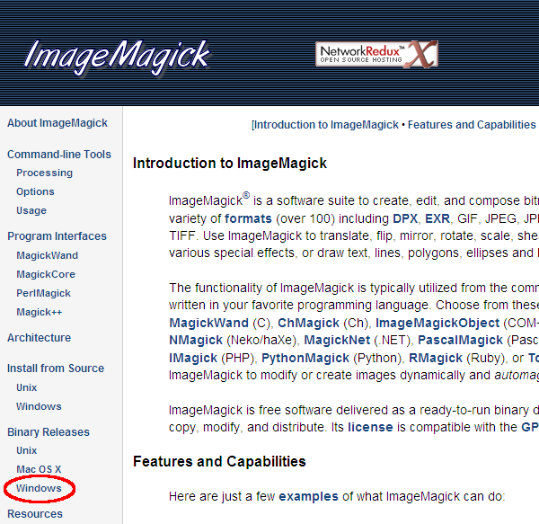
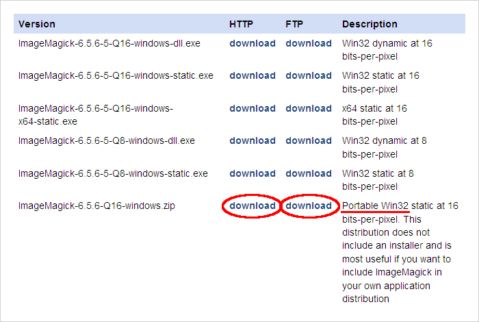
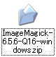
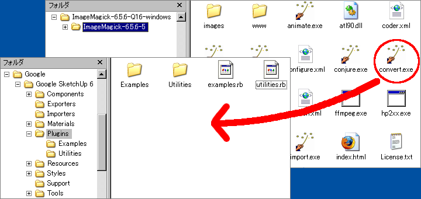

はじめに
この手順は「ImageMagickってなに？」と言う方を対象に書かれています。このツールでImageMagickを使用するためにセットアップする手順の一例です。
すでにImageMagickをセットアップした環境をお使いの方はそちらを使用することも可能です。設定ファイル編集手順書を参照し設定ファイルを編集してください。
１．ImageMagickオフィシャルWebサイト[http://www.imagemagick.org/]を開きます。
２．右にある"Binary Releases"の"Windows"を開きます。

３．"Portable Win32"を任意の場所にダウンロードします。HTTP or FTPはどちらでもかまいません。容量は35MByte程度あります。(2009/09/29現在)
もしこの方法でうまくいかない場合は、"ImageMagick-6.5.6-9-Q16-windows-dll.exe"をダウンロード、インストールしてください。

４．ダウンロードしたファイルを解凍します。

５．解凍した中にある"convert.exe"、"identifi.exe"と言う名前のファイルをGoogle SketchUpの"Plugins"フォルダにコピーします。

６．ImageMagickのセットアップは終了です。
※解凍したファイルは不要です。削除してかまいません。